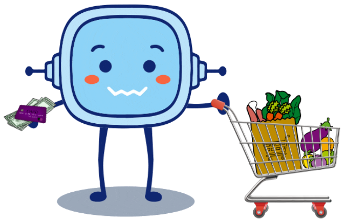
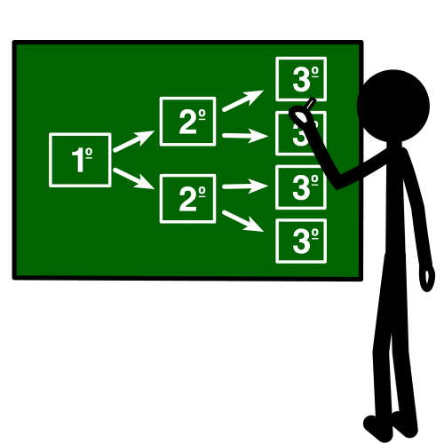
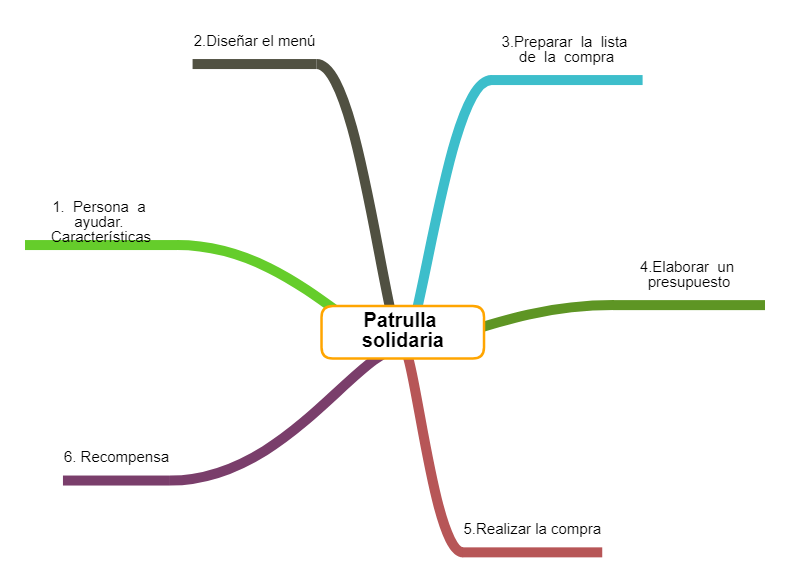

¡Enhorabuena! hasta ahora has aprendido mucho acerca de la energía y nutrientes de los alimentos, además, ya conoces lo necesario acerca de los números decimales como para poder diseñar un menú que cumpla las cantidades recomendadas.
También estás sobradamente preparado para poder realizar la compra semanal de los alimentos necesarios.
Por tanto, es el momento de que saques tu lado más solidario. ¡Una persona necesita tu ayuda!

Definición:
Hacer un plan detallado para llevar a cabo una acción o idea.
Ejemplo:
Debes diseñar cómo será la excursión a Granada.
Lectura facilitada
Ya sabes utilizar los números decimales para poder hacer un menú saludable.
Ahora, junto a tus compañeros debes elaborar un menú para una persona concreta.
Para ello deberás:
- Conocer las necesidades concretas de la persona. Saber si presenta alguna enfermedad o alergia.
- Realizar la lista de la compra de los alimentos que has seleccionado.
- Hacer la compra.
Apoyo visual
{kind=link}
1. Las patrullas solidarias

{"id":"08796dca-a5b2-44af-84f0-8df4fcde8c4b","title":"Patrulla solidaria","mindmap":{"root":{"id":"b53a17b8-ac8d-4965-88e3-cf1be7fd0a56","parentId":null,"text":{"caption":"Patrulla solidaria","font":{"style":"normal","weight":"bold","decoration":"none","size":20,"color":"#000000"}},"offset":{"x":0,"y":0},"foldChildren":false,"branchColor":"#000000","children":[{"id":"0506495a-7f37-44a9-9c03-bfab98f7cf2a","parentId":"b53a17b8-ac8d-4965-88e3-cf1be7fd0a56","text":{"caption":"2.Diseñar el menú","font":{"style":"normal","weight":"normal","decoration":"none","size":15,"color":"#000000"}},"offset":{"x":-210.1875,"y":-257.125},"foldChildren":false,"branchColor":"#505041","children":[]},{"id":"f0449a1c-9bf1-490a-861e-ba63d5d51aeb","parentId":"b53a17b8-ac8d-4965-88e3-cf1be7fd0a56","text":{"caption":"3.Preparar la lista de la compra","font":{"style":"normal","weight":"normal","decoration":"none","size":15,"color":"#000000"}},"offset":{"x":87.83333333333333,"y":-256.125},"foldChildren":false,"branchColor":"#3dbecb","children":[]},{"id":"0b884af0-991f-4660-ba96-3793a61d8936","parentId":"b53a17b8-ac8d-4965-88e3-cf1be7fd0a56","text":{"caption":"4.Elaborar un presupuesto","font":{"style":"normal","weight":"normal","decoration":"none","size":15,"color":"#000000"}},"offset":{"x":210.22916666666666,"y":-31.0625},"foldChildren":false,"branchColor":"#5e9524","children":[]},{"id":"60a21bcb-dd83-4cdc-b6a3-908b0f25b3a0","parentId":"b53a17b8-ac8d-4965-88e3-cf1be7fd0a56","text":{"caption":"5.Realizar la compra","font":{"style":"normal","weight":"normal","decoration":"none","size":15,"color":"#000000"}},"offset":{"x":59.4666748046875,"y":231.17777506510416},"foldChildren":false,"branchColor":"#b75657","children":[]},{"id":"0397382d-9a37-47f6-affc-a52e925b4c66","parentId":"b53a17b8-ac8d-4965-88e3-cf1be7fd0a56","text":{"caption":"6. Recompensa","font":{"style":"normal","weight":"normal","decoration":"none","size":15,"color":"#000000"}},"offset":{"x":-339.8125,"y":159.35416666666666},"foldChildren":false,"branchColor":"#7a3e6b","children":[]},{"id":"ec03eba6-ae34-47bd-a571-35d8eb408e26","parentId":"b53a17b8-ac8d-4965-88e3-cf1be7fd0a56","text":{"caption":"1. Persona a ayudar. Características","font":{"style":"normal","weight":"normal","decoration":"none","size":15,"color":"#000000"}},"offset":{"x":-377.7708333333333,"y":-91.125},"foldChildren":false,"branchColor":"#65cd2b","children":[]}]}},"dates":{"created":1640017807446,"modified":1642695085426},"dimensions":{"x":4000,"y":2000},"autosave":false}
.png){kind=link}